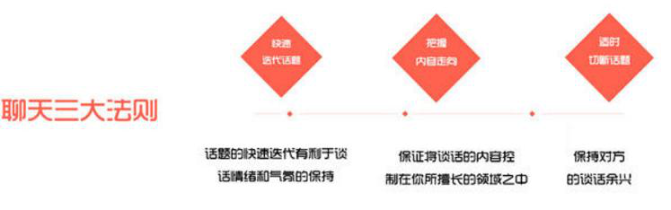
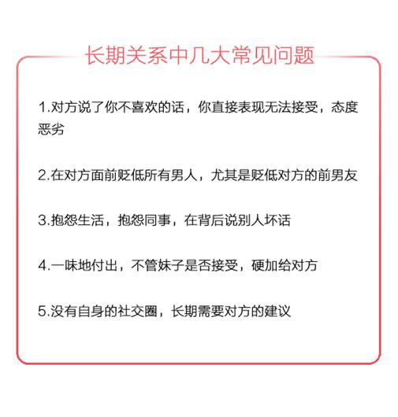
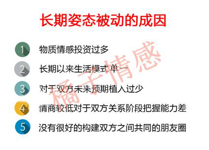

- 返回顶部
- 4006-299-520
- 在线咨询
- 微信公众号

橘子寄语：挽回和追妹子同样都讲究对症下药。那么，分手之后面对妹子的种种状况，我们究竟该如何应对呢？
分手后两人的相处与关系有无数种，有的两人形同陌路从此江湖不再见，有的人成了彼此最熟悉的陌生人，也有的还打着朋友的旗号在胡作非为，也有因为种种原因被迫离开，两人的感情随着时间默默流逝。
这也就很好的解释了，为什么有的人会在短时间内性格发生急速的扭转。前一天还好好的，分手之后第二天却好像陌生人一般。
在生活之中，因为是恋人关系所以往往看到的都是对方比较好的一面，往往就草率的认为这就是最能代表性格的一面。
说的中二一点，有光的地方必然会有影子。性格这种东西其实也是一个相辅相成的整合体，因此我们对于妹子的挽回不仅仅是要靠以往对她的了解去及逆行一个判定，更多的是她现在状态的回馈去做出下一步的计划与安排。
难度指数：★★★
挽回指数：★★★★★
你们刚刚分手，没有闹得特别僵。聊天方式没有被拉黑，这时候你们要给妹子搞清楚的第一步就是你们究竟是真性分手还是假性分手。
假性分手就好比假性近视，多休息休息，注意调节，补充点营养维生素就可以了。而真性分手就好比是真性近视，只能通过手术这种才可以搞定。
针对假性分手，如果你想跟目标进行沟通，一定要按照下面的聊天三大法则，不要犯过多错误，例如跪舔，短信轰炸等等，导致情况恶化。
其实没有断联通讯，搞人间蒸发，至少可以说明对方对你的抵触心与厌恶情绪没有那么大。与此同时，对方和你说分手之前的情绪指标也是非常重要的参考依据。
这种大情况之下，也是会细分为几种小情况的。
这种情况其实连假性分手都不是那么算的上。女生恋爱关系之中闹点小脾气是在正常不过的事情。
面对这种情况，主要是处于一个对女生性格方面的判断，适当的去略微放低框架的哄一哄问题不大。
那就是真的在生闷气，但是内心却又割舍不下曾经的那段感情。其实，内心的天秤还是更加倾向于选择原谅你的。
面对她对于你的不满，你一定要默默地付出行动，让她看到你的改变。毕竟一个男人的价值，永远不是靠拿嘴说出来这么简单。
但是，这个时候一定也要切记掌握适度原则。略微的放低框架并不代表的是变相的跪舔。
即使是假性分手，对任何人来说恐怕也是极为痛苦的考验。在这个时候，一定要保持住自己一颗理智的头脑。采取最正确，风险最低，收益最高的方式去挽回。
在这里，有很多人非常容易走进一个误区，就是无原则的跪舔与讨好对方。这时候或许会面对假性分手产生效果，但是这样只会不断的给自己埋下隐患。
挽回的过程难度是一次比一次难的，如果就此造成了高低位的逆转，日后只会把自己的姿态越放越低。
很多朋友之前受了种种心灵鸡汤与传统教育的影响，总是误以为恋爱中，男方无条件的付出与爱，对女方无条件的纵容与好的态度，就可以换回一段美好的感情。其实这种想法是大错特错的。
在恋爱的长期关系之中，如果女人掌握了关系的主动权，那么这段关系的维系就可以说很难进行了。
恋爱的本质是价值互换的人际交往，一旦一方和另一方差得太远，让对方没有了棋逢对手以及酒逢知己的感觉，那么对方自然也会离你而去。
难度指数：★★★★
挽回指数：★★★★
分手之后，产生焦虑情绪是情有可原的事情。虽然，分手后和妹子争吵也是挽回过程之中的大忌，但是很多人却最喜欢干这事。
这时候，不管是和妹子争吵还是死缠烂打都成了那个减压的出口。这种情况往往不顾及对方的感受，把对方逼到极致，往往就是导致了拉黑，切断了自己和你的沟通方式。
这种情况，可以说至少在当前一段短时间内，妹子的反感度是一个较高的状态，这种时候其实能够把持住自己不犯错就非常不错了。
你们已经分手了，大家都有彼此的生活，过多的沟通与未来压力的希冀只会把自己和对方都压得喘不过气来。
第二种情况，无疑是分手之后无休止的在妹子以及妹子的社交圈透支自己的价值。而且一般那种时候因为你的情绪崩溃无处宣泄，也往往无法给妹子的生活圈的人留下一个好印象。
此时，你应该先停止纠缠。及时止损，让对方的这一段负面情绪及时过度，如果还能通过其他渠道了解到妹子的情绪波动及实时动态，（如微博，或者是共同好友好哥们的朋友圈截图)了解到一个妹子的这段时间的情绪波动。
这也是一个非常重要的转折点，良好的开端是成功的一半！在挽回过程之中，如果前期没绷住，无法抚平自己的情绪与心性那就是真的输了一半了。
该怎么复联？
在负面情绪过度了之后，这时候就有两条路可以走，第一条就是通过电话正经话题的复联探底。初次试探对方的口风以及情绪状态。
另外一种，就是感情基础比较深厚的可以过一段时间后利用信件、或者通过朋友传话表明你为之前的纠缠行为感到抱歉，理解他分手的决定。甚至可以自制式偶遇让他看到你的变化，间接或直接鼓励他复联。在此过程中，切记勿产生负面情绪的言语。没有人愿意和一个消极的人终日相处在一起。
难度指数：★★★★★
挽回指数：★★★
这种情况说实话是比较少见的。因为她们要是不发自拍和旅游照片，那这旅游算是白游了。
但是玩失踪，是要比上一种情况严重的。你们相恋许久，或多或少都会有一些共同的朋友圈子，虽然不建议去过多的打扰她的朋友圈。
大家应该都知道女生通常分手后的三阶段：
第一阶段:难过痛苦期。
第二阶段:向往新生活阶段。
第三阶段:回归现实阶段。
一二段并举，使得我们或许没法在最短的时间内去打开她的心扉，但是我们却可以在最稳妥的第三阶段对她采取攻势，稳扎稳打。
这个时候，你就要懂得对女人心里状态的一个掌控了。在第三阶段回归现实阶段的女人的真正诉求到底是什么呢？在第三阶段的女人其实在感情之中最看重的无非就是双感。
女人在第三阶段需要的爱与关怀有很多种，往具体的说涵盖了，关心、理解、尊重、忠诚、体贴、安慰。女人的物质需求高，有时是因为没有遇到能引导她生活的男人。所以，女人的需求得不到满足而提出分手，其实问题还是出在男人身上。如果你都不懂得了解和满足她的需求，她怎么会指望和你在一起会开心呢？
这种情况，有两点需要注意。
第一：面对事实，降低需求感
挽回一个人，最重要的就是挽回对方的心。倘若在她再次出现的时候的你在她的面前表现出强烈的需求感，做太多的关切之举，这种自贬身价式的挽回做法显然是得不到她回心转意的，相反还会有可能把对方推远。
第二: 以普通朋友方式出现，扭转对方负面情绪与印象
别忘记了，从你们一分手的那刻起，你们的关系就只是介乎于陌生人和普通朋友之间了，就算你的改变足以够好了，并且能跟对方偶尔聊上几句时，你们也只能是普通朋友的身边而已，不要太过于亲密。
不过，女人往往都是感性以及念旧情的，特别是她在第三阶段回归现实的阶段之时，你以一个特别的普通朋友身份出现在她面前，并且以成熟、善解人意的言语跟他沟通时，她会大大感受到你的改变，并且会对你迅速扭转之前不好的情绪与印象。
难度指数：★★★★★
挽回指数：★★★
这是情绪最崩溃的状态，没有之一！面对这种情况，一定要先问清楚自己的本心，是否有大毅力与大决心把她挽回！
很多人因为对方有了新欢而痛苦万分！但是这个世界没有后悔药卖，我们能做的只有及时止损与争取利益的最大化。
这种情况算是比较棘手的了。不是有那么一句话叫做，走出一段恋情的最好方法就是开始一段新恋情。
即使你对这项新事物不是多么感兴趣，但是至少对于你缓解伤痛有奇效。面对这种情况，你需要做的第一步就是稳住心态，准备好打中长线的一个准备。
有了新欢你就一定不能再做过于暧昧的事情，只能保持一个朋友的简单的关心，这样她以后如果出现感情问题就会第一个想你，你不能做出越界的事情，否则她会认为你在逼她跟男朋友分手，她是不可能这么做的，因为她会担心你觉得她是一个随便的人，以后你跟她在一起也不会对她好，也不尊重她自愿，会给予她不当的压力，简单的关心朋友的陪伴就可以了。
这时候的挽回，已经不仅仅是挽回了，跟多的还包含一些挖墙脚的成分在里面。想想那些妹子是如何小三上位的，你或许就是要在相当长的一段时间里成为一个友达以上，恋人未满的状态。也就是俗称的男版绿茶婊的形象。
因为对方很有可能是因为一时情绪激动而草率在一起的，一来并没有你们那么深的感情基础，二来两个人稍微长期的适配度与契合度也不一定那么高，那么这时候，你的机会就来了！这时候，现男友摧毁法则就会派上用场！
现男友摧毁法则是什么呢，就是你在她伤心难过去安慰她的过程中，八句夸她的现任，两句去贬。
举个例子：
“其实xxx这个人真的挺不错的，比较有责任心脾气又好，你看对你也不错，就是比较没有上进心，不过一人一个样嘛，你也多多理解他”。
这个时候她不会去在意那八句夸，而是会觉得那两句贬好像真的如你所言，最好对方的短板正好是你的强项，这个时候你的朋友圈再发一些比较上进积极的内容，她马上会觉得现任不如你。
矛盾的种子埋下之后，他们争吵中女孩就会觉得现任真是问题越来越多，而你这个旧爱反而成了更好的人，再也朋友名义多关心，增加接触机会，发生身体接触亲密行为。
挽回路漫漫，挽回过程之中其实核心点与关键点往往不是对手多么强大，而是自己打败了自己。其实细究起来，真的没有什么情况是不能挽回的。但是很多人都是在挽回路途中输给了自己。
橘子情感，专注情感，为爱而生。您身边的爱情指导挽回专家。如有需要，可关注橘子情感。
{kind=link}